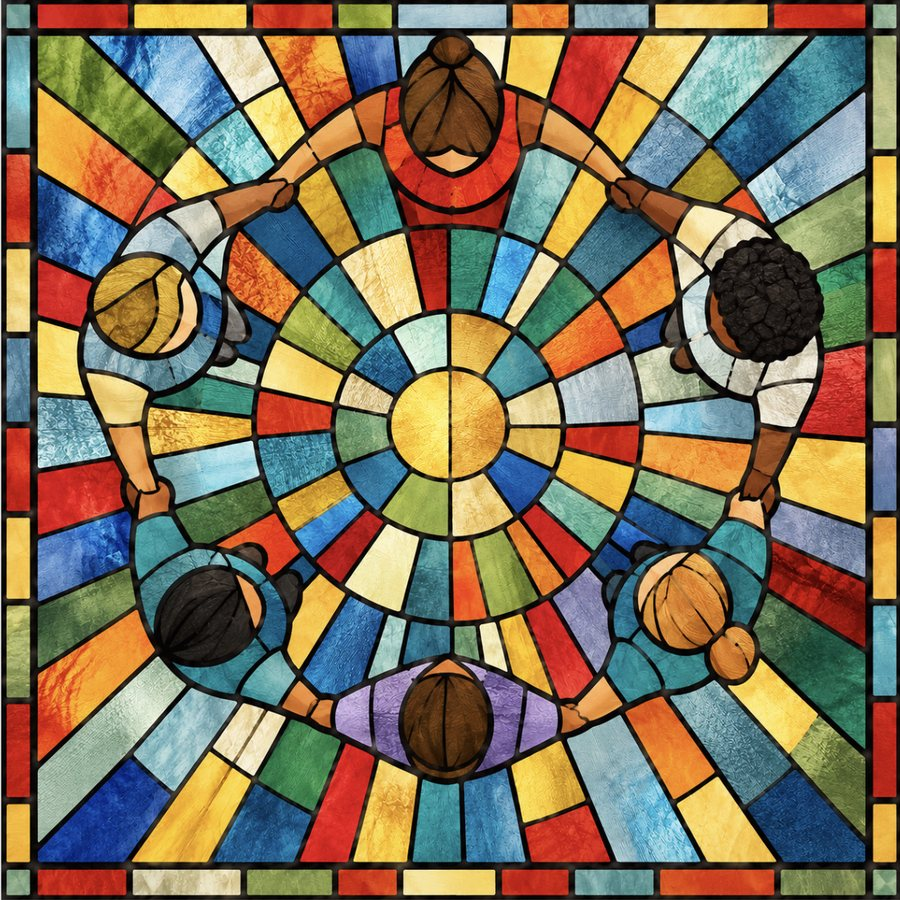
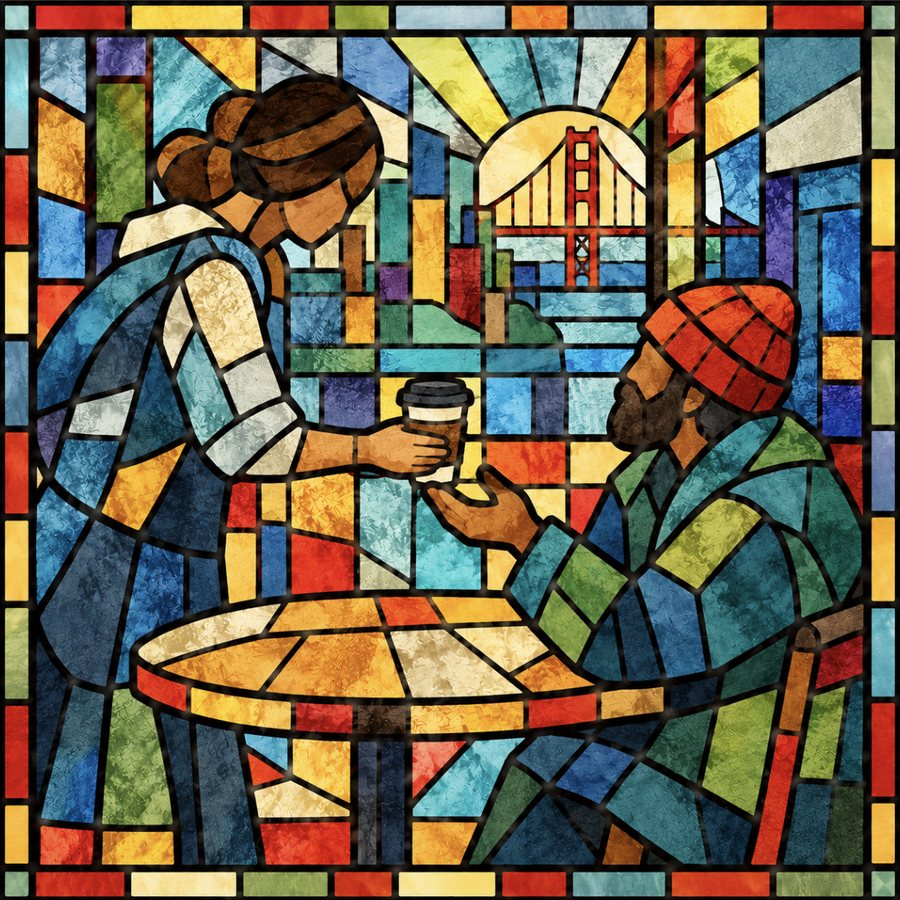
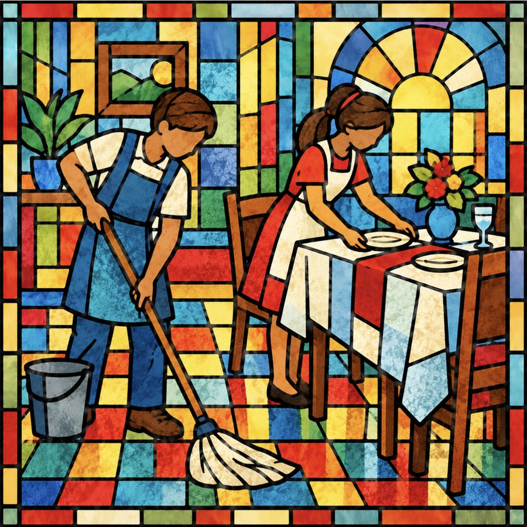
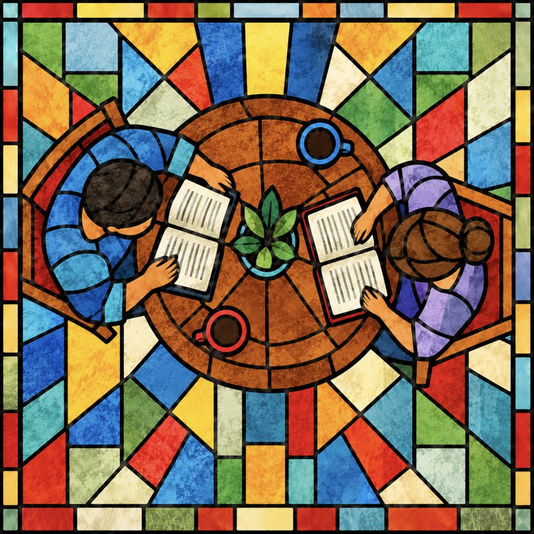

Make the Tenderloin your home.
Love God, love your neighbors and help form disciples, for the long haul. If you sense a call to the city, we’d love to talk.
Come and build this with us.
Joining staff isn’t just taking a role. It’s adopting a way of life: becoming a place of peace in the middle of the Tenderloin, a presence people know they can return to.
The most important things on Ellis Street happen slowly: a neighbor who learns your name, a friendship that holds through a hard season, a student who finally gets what it means to live their faith. Staff are the people who stay, and who shape the community that everyone else encounters.
You’ll be rooted in the way of Jesus alongside people who have given years to this neighborhood, and you’ll help form the students, volunteers and teams who carry that heart back out into the world.
More about the Monastery



Three teams, one mission.
Neighborhood engagement
The Ellis Room, the food pantry, showers and haircuts, hot chocolate and outreach on the street.
Training & outreach
Staffing the DTS, hosting Mission Adventures and YWAM teams, and leading teams into the city.
Operations
Kitchen, hospitality, maintenance, office, communications and finance: the work that keeps the doors open.
Three steps.
Sensing a call to the city?
We’d love to hear your story. Email info@ywamsanfrancisco.org or call 415-885-6543.